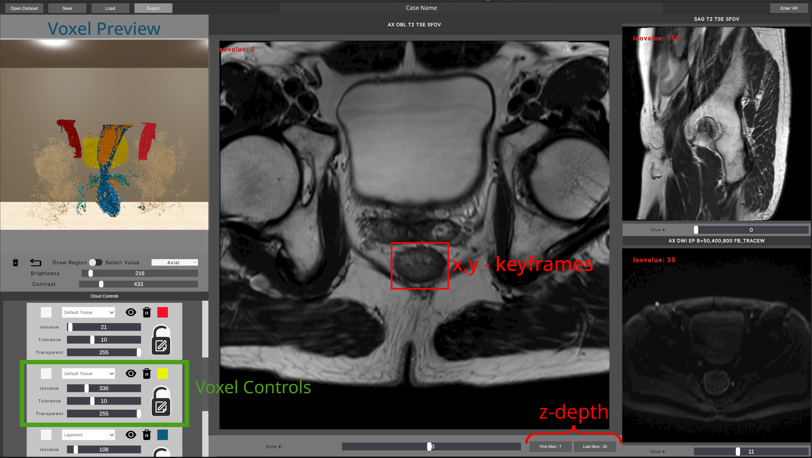
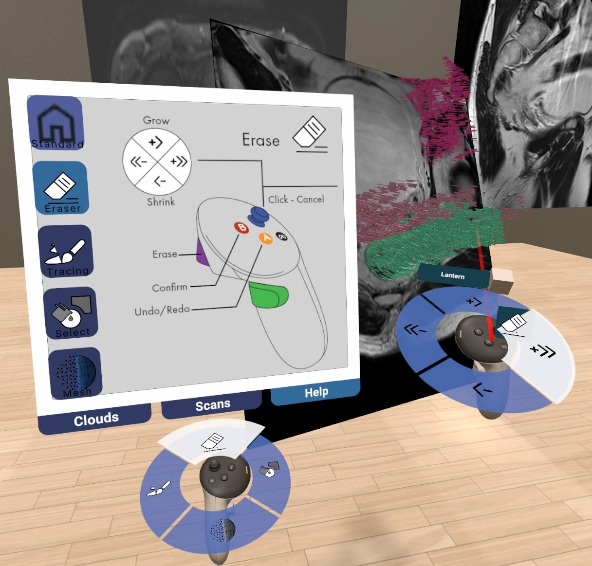
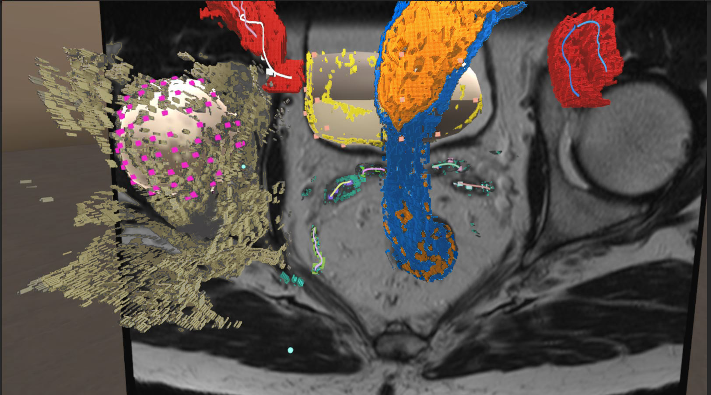
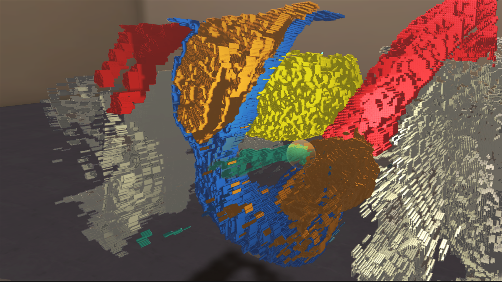
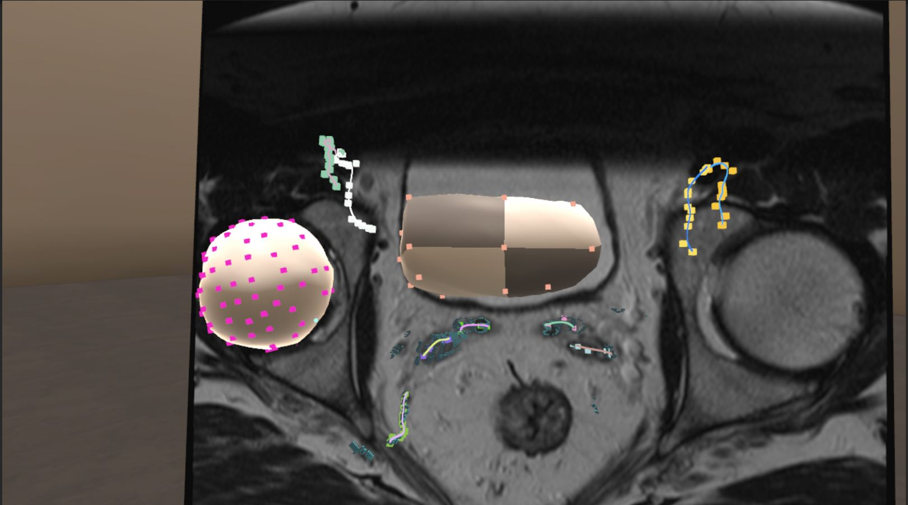
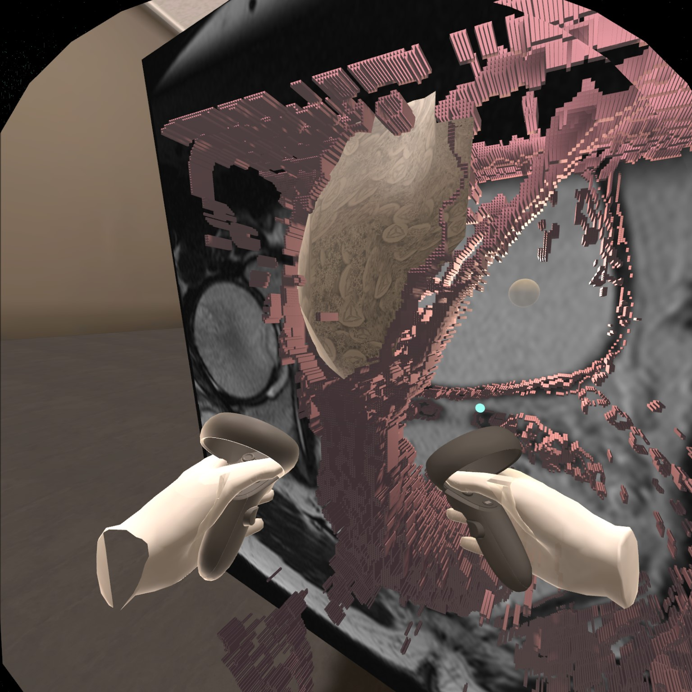
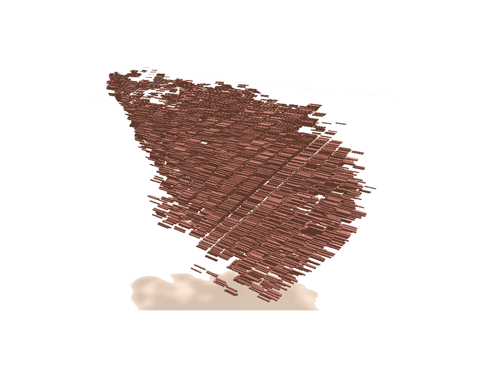

This project is a cross-platform VR application meant to bring state-of-the-art reconstruction technology to non-specialist physicians. By using stereoscopic rendering, natural navigation techniques, and proprioception-enhanced memory - it allows clinicians to tweak and tune rapid prototype models created with the assitance of a intuitive segmentation interactions, without the need for time-consuming requests of uniquely trained engineers to perform the alterations. While orginally developed as a stand-alone C++/OpenGL software, it was later converted to leverage Unity as the OpenXR API and associated dependencies rapidly matured during the project's formative years.

The desktop portion of the interface designs specifically incorporate elements of existing radiology software to lower the learning curve and increase user trust. The desktop is used to define a rough regions of interest using a series of keyframes to map changes in a given structure's center of mass. A preview of the generated voxel clouds is provided for initial verifications of tissue captures, before any curation is performed in the VR environment.

The VR environment was informed by minimizing tool fatigue and maximizing the user's attention on the visualization for interaction. Tool menus, tool states, and extent of tool actions were all limited to what could be reasonably contained across two small radial menus, one for global actions and one for the active tool. A tabulated pallet was also attatched to the non-dominant hand for direct data interactions such as overlaying the scan images atop the voxel clouds and toggling cloud transparencies.

curation including isolated colon and bladder mesh overlaid on scan images



